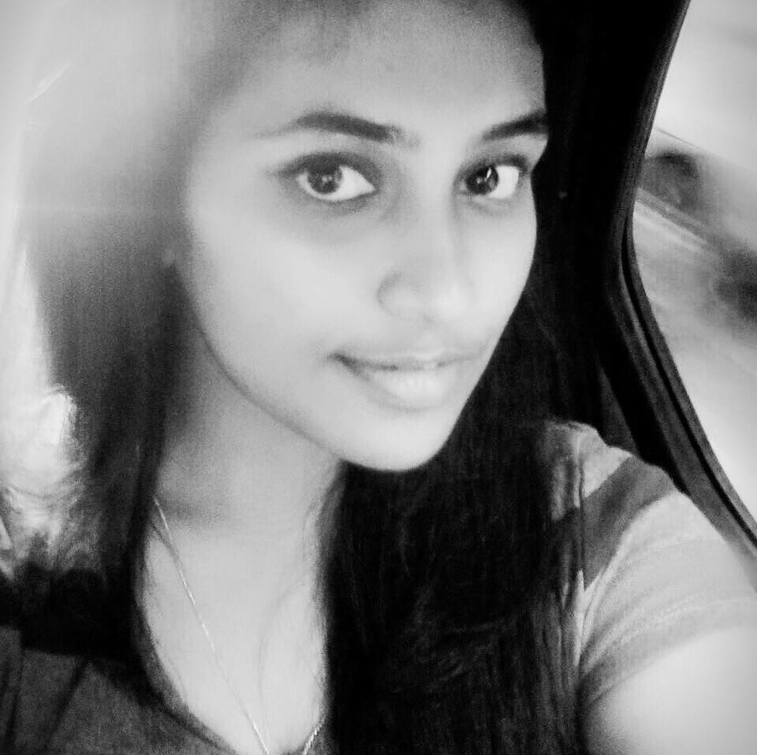

Hello!
I graduated with Bachelor's degree from Computer Science department, SRM University in 2016. And am pursuing MBA from National Institute of Technology, Warangal. My advisor is Mrs.Sathiya Priya

Contact Information
Personal: mounika.chennupati9@gmail.com
Skype Id: mounika chennupati
Mailing Address:
DNo:1-37-42, Anugolu Vari Street,Nazerpet, Tenali, Guntur(dt),
Andhra Pradesh-522201.